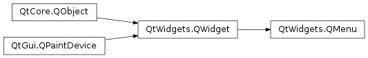
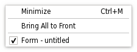

Qt Documentation
QMenu¶
Synopsis¶
Functions¶
- def
actionAt(arg__1) - def
actionGeometry(arg__1) - def
activeAction() - def
addAction(arg__1, arg__2, arg__3[, arg__4=0]) - def
addAction(arg__1, arg__2[, arg__3=0]) - def
addAction(icon, text) - def
addAction(icon, text, receiver, member[, shortcut=0]) - def
addAction(text) - def
addAction(text, receiver, member[, shortcut=0]) - def
addMenu(icon, title) - def
addMenu(menu) - def
addMenu(title) - def
addSection(icon, text) - def
addSection(text) - def
addSeparator() - def
clear() - def
columnCount() - def
defaultAction() - def
exec_() - def
exec_(pos[, at=nullptr]) - def
hideTearOffMenu() - def
icon() - def
initStyleOption(option, action) - def
insertMenu(before, menu) - def
insertSection(before, icon, text) - def
insertSection(before, text) - def
insertSeparator(before) - def
isEmpty() - def
isTearOffEnabled() - def
isTearOffMenuVisible() - def
menuAction() - def
popup(pos[, at=nullptr]) - def
separatorsCollapsible() - def
setActiveAction(act) - def
setDefaultAction(arg__1) - def
setIcon(icon) - def
setSeparatorsCollapsible(collapse) - def
setTearOffEnabled(arg__1) - def
setTitle(title) - def
setToolTipsVisible(visible) - def
showTearOffMenu() - def
showTearOffMenu(pos) - def
title() - def
toolTipsVisible()
Signals¶
- def
aboutToHide() - def
aboutToShow() - def
hovered(action) - def
triggered(action)
Detailed Description¶
The
PySide2.QtWidgets.QMenuclass provides a menu widget for use in menu bars, context menus, and other popup menus.A menu widget is a selection menu. It can be either a pull-down menu in a menu bar or a standalone context menu. Pull-down menus are shown by the menu bar when the user clicks on the respective item or presses the specified shortcut key. Use
QMenuBar.addMenu()to insert a menu into a menu bar. Context menus are usually invoked by some special keyboard key or by right-clicking. They can be executed either asynchronously withPySide2.QtWidgets.QMenu.popup()or synchronously withexec(). Menus can also be invoked in response to button presses; these are just like context menus except for how they are invoked.
Actions¶
A menu consists of a list of action items. Actions are added with the
PySide2.QtWidgets.QMenu.addAction(),PySide2.QtWidgets.QWidget.addActions()andPySide2.QtWidgets.QWidget.insertAction()functions. An action is represented vertically and rendered byPySide2.QtWidgets.QStyle. In addition, actions can have a text label, an optional icon drawn on the very left side, and shortcut key sequence such as “Ctrl+X”.The existing actions held by a menu can be found with
PySide2.QtWidgets.QWidget.actions().There are four kinds of action items: separators, actions that show a submenu, widgets, and actions that perform an action. Separators are inserted with
PySide2.QtWidgets.QMenu.addSeparator(), submenus withPySide2.QtWidgets.QMenu.addMenu(), and all other items are considered action items.When inserting action items you usually specify a receiver and a slot. The receiver will be notifed whenever the item is
PySide2.Qt3DInput.Qt3DInput::QAction.triggered(). In addition,PySide2.QtWidgets.QMenuprovides two signals,PySide2.QtWidgets.QMenu.triggered()andPySide2.QtWidgets.QMenu.hovered(), which signal thePySide2.QtWidgets.QActionthat was triggered from the menu.You clear a menu with
PySide2.QtWidgets.QMenu.clear()and remove individual action items withPySide2.QtWidgets.QWidget.removeAction().A
PySide2.QtWidgets.QMenucan also provide a tear-off menu. A tear-off menu is a top-level window that contains a copy of the menu. This makes it possible for the user to “tear off” frequently used menus and position them in a convenient place on the screen. If you want this functionality for a particular menu, insert a tear-off handle withPySide2.QtWidgets.QMenu.setTearOffEnabled(). When using tear-off menus, bear in mind that the concept isn’t typically used on Microsoft Windows so some users may not be familiar with it. Consider using aPySide2.QtWidgets.QToolBarinstead.Widgets can be inserted into menus with the
PySide2.QtWidgets.QWidgetActionclass. Instances of this class are used to hold widgets, and are inserted into menus with thePySide2.QtWidgets.QMenu.addAction()overload that takes aPySide2.QtWidgets.QAction.Conversely, actions can be added to widgets with the
PySide2.QtWidgets.QMenu.addAction(),PySide2.QtWidgets.QWidget.addActions()andPySide2.QtWidgets.QWidget.insertAction()functions.Warning
To make
PySide2.QtWidgets.QMenuvisible on the screen,exec()orPySide2.QtWidgets.QMenu.popup()should be used instead ofPySide2.QtWidgets.QWidget.show().
QMenu on macOS with Qt Build Against Cocoa¶
PySide2.QtWidgets.QMenucan be inserted only once in a menu/menubar. Subsequent insertions will have no effect or will result in a disabled menu item.See the Menus example for an example of how to use
PySide2.QtWidgets.QMenuBarandPySide2.QtWidgets.QMenuin your application.Important inherited functions:
PySide2.QtWidgets.QMenu.addAction(),PySide2.QtWidgets.QWidget.removeAction(),PySide2.QtWidgets.QMenu.clear(),PySide2.QtWidgets.QMenu.addSeparator(), andPySide2.QtWidgets.QMenu.addMenu().
-
class
PySide2.QtWidgets.QMenu([parent=nullptr])¶ -
class
PySide2.QtWidgets.QMenu(title[, parent=nullptr]) Parameters: - title – unicode
- parent –
PySide2.QtWidgets.QWidget
Constructs a menu with parent
parent.Although a popup menu is always a top-level widget, if a parent is passed the popup menu will be deleted when that parent is destroyed (as with any other
PySide2.QtCore.QObject).Constructs a menu with a
titleand aparent.Although a popup menu is always a top-level widget, if a parent is passed the popup menu will be deleted when that parent is destroyed (as with any other
PySide2.QtCore.QObject).See also
-
PySide2.QtWidgets.QMenu.aboutToHide()¶
-
PySide2.QtWidgets.QMenu.aboutToShow()¶
-
PySide2.QtWidgets.QMenu.actionAt(arg__1)¶ Parameters: arg__1 – PySide2.QtCore.QPointReturn type: PySide2.QtWidgets.QActionReturns the item at
pt; returns 0 if there is no item there.
-
PySide2.QtWidgets.QMenu.actionGeometry(arg__1)¶ Parameters: arg__1 – PySide2.QtWidgets.QActionReturn type: PySide2.QtCore.QRectReturns the geometry of action
act.
-
PySide2.QtWidgets.QMenu.activeAction()¶ Return type: PySide2.QtWidgets.QActionReturns the currently highlighted action, or 0 if no action is currently highlighted.
-
PySide2.QtWidgets.QMenu.addAction(text)¶ Parameters: text – unicode Return type: PySide2.QtWidgets.QActionThis is an overloaded function.
This convenience function creates a new action with
text. The function adds the newly created action to the menu’s list of actions, and returns it.PySide2.QtWidgets.QMenutakes ownership of the returnedPySide2.QtWidgets.QAction.See also
-
PySide2.QtWidgets.QMenu.addAction(text, receiver, member[, shortcut=0]) Parameters: - text – unicode
- receiver –
PySide2.QtCore.QObject - member – str
- shortcut –
PySide2.QtGui.QKeySequence
Return type: This is an overloaded function.
This convenience function creates a new action with the text
textand an optional shortcutshortcut. The action’sPySide2.Qt3DInput.Qt3DInput::QAction.triggered()signal is connected to thereceiver‘smemberslot. The function adds the newly created action to the menu’s list of actions and returns it.PySide2.QtWidgets.QMenutakes ownership of the returnedPySide2.QtWidgets.QAction.See also
-
PySide2.QtWidgets.QMenu.addAction(icon, text, receiver, member[, shortcut=0]) Parameters: - icon –
PySide2.QtGui.QIcon - text – unicode
- receiver –
PySide2.QtCore.QObject - member – str
- shortcut –
PySide2.QtGui.QKeySequence
Return type: This is an overloaded function.
This convenience function creates a new action with an
iconand sometextand an optional shortcutshortcut. The action’sPySide2.Qt3DInput.Qt3DInput::QAction.triggered()signal is connected to thememberslot of thereceiverobject. The function adds the newly created action to the menu’s list of actions, and returns it.PySide2.QtWidgets.QMenutakes ownership of the returnedPySide2.QtWidgets.QAction.See also
- icon –
-
PySide2.QtWidgets.QMenu.addAction(icon, text) Parameters: - icon –
PySide2.QtGui.QIcon - text – unicode
Return type: This is an overloaded function.
This convenience function creates a new action with an
iconand sometext. The function adds the newly created action to the menu’s list of actions, and returns it.PySide2.QtWidgets.QMenutakes ownership of the returnedPySide2.QtWidgets.QAction.See also
- icon –
-
PySide2.QtWidgets.QMenu.addAction(arg__1, arg__2, arg__3[, arg__4=0]) Parameters: - arg__1 –
PySide2.QtGui.QIcon - arg__2 – unicode
- arg__3 –
PyObject - arg__4 –
PySide2.QtGui.QKeySequence
- arg__1 –
-
PySide2.QtWidgets.QMenu.addAction(arg__1, arg__2[, arg__3=0]) Parameters: - arg__1 – unicode
- arg__2 –
PyObject - arg__3 –
PySide2.QtGui.QKeySequence
-
PySide2.QtWidgets.QMenu.addMenu(title)¶ Parameters: title – unicode Return type: PySide2.QtWidgets.QMenuAppends a new
PySide2.QtWidgets.QMenuwithtitleto the menu. The menu takes ownership of the menu. Returns the new menu.See also
-
PySide2.QtWidgets.QMenu.addMenu(menu) Parameters: menu – PySide2.QtWidgets.QMenuReturn type: PySide2.QtWidgets.QActionThis convenience function adds
menuas a submenu to this menu. It returnsmenu‘sPySide2.QtWidgets.QMenu.menuAction(). This menu does not take ownership ofmenu.See also
-
PySide2.QtWidgets.QMenu.addMenu(icon, title) Parameters: - icon –
PySide2.QtGui.QIcon - title – unicode
Return type: Appends a new
PySide2.QtWidgets.QMenuwithiconandtitleto the menu. The menu takes ownership of the menu. Returns the new menu.See also
- icon –
-
PySide2.QtWidgets.QMenu.addSection(text)¶ Parameters: text – unicode Return type: PySide2.QtWidgets.QActionThis convenience function creates a new section action, i.e. an action with
QAction.isSeparator()returning true but also havingtexthint, and adds the new action to this menu’s list of actions. It returns the newly created action.The rendering of the hint is style and platform dependent. Widget styles can use the text information in the rendering for sections, or can choose to ignore it and render sections like simple separators.
PySide2.QtWidgets.QMenutakes ownership of the returnedPySide2.QtWidgets.QAction.See also
-
PySide2.QtWidgets.QMenu.addSection(icon, text) Parameters: - icon –
PySide2.QtGui.QIcon - text – unicode
Return type: This convenience function creates a new section action, i.e. an action with
QAction.isSeparator()returning true but also havingtextandiconhints, and adds the new action to this menu’s list of actions. It returns the newly created action.The rendering of the hints is style and platform dependent. Widget styles can use the text and icon information in the rendering for sections, or can choose to ignore them and render sections like simple separators.
PySide2.QtWidgets.QMenutakes ownership of the returnedPySide2.QtWidgets.QAction.See also
- icon –
-
PySide2.QtWidgets.QMenu.addSeparator()¶ Return type: PySide2.QtWidgets.QActionThis convenience function creates a new separator action, i.e. an action with
QAction.isSeparator()returning true, and adds the new action to this menu’s list of actions. It returns the newly created action.PySide2.QtWidgets.QMenutakes ownership of the returnedPySide2.QtWidgets.QAction.See also
-
PySide2.QtWidgets.QMenu.clear()¶ Removes all the menu’s actions. Actions owned by the menu and not shown in any other widget are deleted.
-
PySide2.QtWidgets.QMenu.columnCount()¶ Return type: PySide2.QtCore.intIf a menu does not fit on the screen it lays itself out so that it does fit. It is style dependent what layout means (for example, on Windows it will use multiple columns).
This functions returns the number of columns necessary.
-
PySide2.QtWidgets.QMenu.defaultAction()¶ Return type: PySide2.QtWidgets.QActionReturns the current default action.
-
PySide2.QtWidgets.QMenu.exec_(pos[, at=nullptr])¶ Parameters: - pos –
PySide2.QtCore.QPoint - at –
PySide2.QtWidgets.QAction
Return type: This is an overloaded function.
Executes this menu synchronously.
Pops up the menu so that the action
actionwill be at the specified global positionp. To translate a widget’s local coordinates into global coordinates, useQWidget.mapToGlobal().This returns the triggered
PySide2.QtWidgets.QActionin either the popup menu or one of its submenus, or 0 if no item was triggered (normally because the user pressed Esc).Note that all signals are emitted as usual. If you connect a
PySide2.QtWidgets.QActionto a slot and call the menu’sexec(), you get the result both via the signal-slot connection and in the return value ofexec().Common usage is to position the menu at the current mouse position:
exec_(QCursor.pos())
or aligned to a widget:
exec_(somewidget.mapToGlobal(QPoint(0, 0)))
or in reaction to a
PySide2.QtGui.QMouseEvent*e:exec_(e.globalPos())
When positioning a menu with
exec()orPySide2.QtWidgets.QMenu.popup(), bear in mind that you cannot rely on the menu’s currentPySide2.QtWidgets.QWidget.size(). For performance reasons, the menu adapts its size only when necessary. So in many cases, the size before and after the show is different. Instead, usePySide2.QtWidgets.QMenu.sizeHint()which calculates the proper size depending on the menu’s current contents.- pos –
-
PySide2.QtWidgets.QMenu.exec_() Return type: PySide2.QtWidgets.QActionExecutes this menu synchronously.
This is equivalent to
exec(pos()).This returns the triggered
PySide2.QtWidgets.QActionin either the popup menu or one of its submenus, or 0 if no item was triggered (normally because the user pressed Esc).In most situations you’ll want to specify the position yourself, for example, the current mouse position:
exec_(QCursor.pos())
or aligned to a widget:
exec_(somewidget.mapToGlobal(QPoint(0,0)))
or in reaction to a
PySide2.QtGui.QMouseEvent*e:exec_(e.globalPos())
-
static
PySide2.QtWidgets.QMenu.exec_(actions, pos[, at=nullptr[, parent=nullptr]]) Parameters: - actions –
- pos –
PySide2.QtCore.QPoint - at –
PySide2.QtWidgets.QAction - parent –
PySide2.QtWidgets.QWidget
Return type: This is an overloaded function.
Executes a menu synchronously.
The menu’s actions are specified by the list of
actions. The menu will pop up so that the specified action,at, appears at global positionpos. Ifatis not specified then the menu appears at positionpos.parentis the menu’s parent widget; specifying the parent will provide context whenposalone is not enough to decide where the menu should go (e.g., with multiple desktops or when the parent is embedded inPySide2.QtWidgets.QGraphicsView).The function returns the triggered
PySide2.QtWidgets.QActionin either the popup menu or one of its submenus, or 0 if no item was triggered (normally because the user pressed Esc).This is equivalent to:
menu = QMenu() at = actions[0] // Assumes actions is not empty for a in actions: menu.addAction(a) menu.exec_(pos, at)
-
PySide2.QtWidgets.QMenu.hideTearOffMenu()¶ This function will forcibly hide the torn off menu making it disappear from the user’s desktop.
-
PySide2.QtWidgets.QMenu.hovered(action)¶ Parameters: action – PySide2.QtWidgets.QAction
-
PySide2.QtWidgets.QMenu.icon()¶ Return type: PySide2.QtGui.QIconSee also
-
PySide2.QtWidgets.QMenu.initStyleOption(option, action)¶ Parameters: - option –
PySide2.QtWidgets.QStyleOptionMenuItem - action –
PySide2.QtWidgets.QAction
Initialize
optionwith the values from this menu and information fromaction. This method is useful for subclasses when they need aPySide2.QtWidgets.QStyleOptionMenuItem, but don’t want to fill in all the information themselves.- option –
-
PySide2.QtWidgets.QMenu.insertMenu(before, menu)¶ Parameters: - before –
PySide2.QtWidgets.QAction - menu –
PySide2.QtWidgets.QMenu
Return type: This convenience function inserts
menubefore actionbeforeand returns the menusPySide2.QtWidgets.QMenu.menuAction().- before –
-
PySide2.QtWidgets.QMenu.insertSection(before, text)¶ Parameters: - before –
PySide2.QtWidgets.QAction - text – unicode
Return type: This convenience function creates a new title action, i.e. an action with
QAction.isSeparator()returning true but also havingtexthint. The function inserts the newly created action into this menu’s list of actions before actionbeforeand returns it.The rendering of the hint is style and platform dependent. Widget styles can use the text information in the rendering for sections, or can choose to ignore it and render sections like simple separators.
PySide2.QtWidgets.QMenutakes ownership of the returnedPySide2.QtWidgets.QAction.- before –
-
PySide2.QtWidgets.QMenu.insertSection(before, icon, text) Parameters: - before –
PySide2.QtWidgets.QAction - icon –
PySide2.QtGui.QIcon - text – unicode
Return type: This convenience function creates a new title action, i.e. an action with
QAction.isSeparator()returning true but also havingtextandiconhints. The function inserts the newly created action into this menu’s list of actions before actionbeforeand returns it.The rendering of the hints is style and platform dependent. Widget styles can use the text and icon information in the rendering for sections, or can choose to ignore them and render sections like simple separators.
PySide2.QtWidgets.QMenutakes ownership of the returnedPySide2.QtWidgets.QAction.- before –
-
PySide2.QtWidgets.QMenu.insertSeparator(before)¶ Parameters: before – PySide2.QtWidgets.QActionReturn type: PySide2.QtWidgets.QActionThis convenience function creates a new separator action, i.e. an action with
QAction.isSeparator()returning true. The function inserts the newly created action into this menu’s list of actions before actionbeforeand returns it.PySide2.QtWidgets.QMenutakes ownership of the returnedPySide2.QtWidgets.QAction.
-
PySide2.QtWidgets.QMenu.isEmpty()¶ Return type: PySide2.QtCore.boolReturns
trueif there are no visible actions inserted into the menu, false otherwise.See also
-
PySide2.QtWidgets.QMenu.isTearOffEnabled()¶ Return type: PySide2.QtCore.bool
-
PySide2.QtWidgets.QMenu.isTearOffMenuVisible()¶ Return type: PySide2.QtCore.boolWhen a menu is torn off a second menu is shown to display the menu contents in a new window. When the menu is in this mode and the menu is visible returns
true; otherwise false.
-
PySide2.QtWidgets.QMenu.menuAction()¶ Return type: PySide2.QtWidgets.QActionReturns the action associated with this menu.
-
PySide2.QtWidgets.QMenu.popup(pos[, at=nullptr])¶ Parameters: - pos –
PySide2.QtCore.QPoint - at –
PySide2.QtWidgets.QAction
Displays the menu so that the action
atActionwill be at the specified global positionp. To translate a widget’s local coordinates into global coordinates, useQWidget.mapToGlobal().When positioning a menu with
exec()or , bear in mind that you cannot rely on the menu’s currentPySide2.QtWidgets.QWidget.size(). For performance reasons, the menu adapts its size only when necessary, so in many cases, the size before and after the show is different. Instead, usePySide2.QtWidgets.QMenu.sizeHint()which calculates the proper size depending on the menu’s current contents.See also
QWidget.mapToGlobal()exec()- pos –
-
PySide2.QtWidgets.QMenu.separatorsCollapsible()¶ Return type: PySide2.QtCore.bool
-
PySide2.QtWidgets.QMenu.setActiveAction(act)¶ Parameters: act – PySide2.QtWidgets.QActionSets the currently highlighted action to
act.
-
PySide2.QtWidgets.QMenu.setDefaultAction(arg__1)¶ Parameters: arg__1 – PySide2.QtWidgets.QActionThis sets the default action to
act. The default action may have a visual cue, depending on the currentPySide2.QtWidgets.QStyle. A default action usually indicates what will happen by default when a drop occurs.
-
PySide2.QtWidgets.QMenu.setIcon(icon)¶ Parameters: icon – PySide2.QtGui.QIconSee also
-
PySide2.QtWidgets.QMenu.setSeparatorsCollapsible(collapse)¶ Parameters: collapse – PySide2.QtCore.bool
-
PySide2.QtWidgets.QMenu.setTearOffEnabled(arg__1)¶ Parameters: arg__1 – PySide2.QtCore.bool
-
PySide2.QtWidgets.QMenu.setTitle(title)¶ Parameters: title – unicode See also
-
PySide2.QtWidgets.QMenu.setToolTipsVisible(visible)¶ Parameters: visible – PySide2.QtCore.bool
-
PySide2.QtWidgets.QMenu.showTearOffMenu(pos)¶ Parameters: pos – PySide2.QtCore.QPointThis function will forcibly show the torn off menu making it appear on the user’s desktop at the specified global position
pos.
-
PySide2.QtWidgets.QMenu.showTearOffMenu() This is an overloaded function.
This function will forcibly show the torn off menu making it appear on the user’s desktop under the mouse currsor.
-
PySide2.QtWidgets.QMenu.title()¶ Return type: unicode See also
-
PySide2.QtWidgets.QMenu.toolTipsVisible()¶ Return type: PySide2.QtCore.bool
-
PySide2.QtWidgets.QMenu.triggered(action)¶ Parameters: action – PySide2.QtWidgets.QAction
© 2018 The Qt Company Ltd. Documentation contributions included herein are the copyrights of their respective owners. The documentation provided herein is licensed under the terms of the GNU Free Documentation License version 1.3 as published by the Free Software Foundation. Qt and respective logos are trademarks of The Qt Company Ltd. in Finland and/or other countries worldwide. All other trademarks are property of their respective owners.